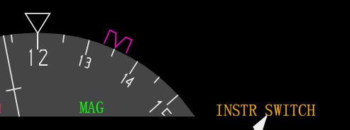
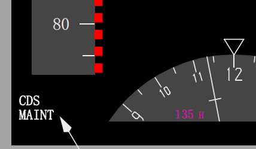
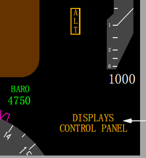

内部相关链接:
IRS输入
IRS设置输入
大气数据(ADIRU)
显示选择面板
惯性基准系统(IRS)转换电门
BOTH ON L -- 使用左IRS作为飞行仪表的姿态和航向源。
NORMAL -- 使用默认的IRS作为飞行仪表的姿态和航向源。
BOTH ON R -- 使用右IRS作为飞行仪表的姿态和航向源。
VHF NAV转换电门
VHF NAV转换电门可改变DEUs用于导航显示的数据源。该电门转换下列数据：DME、ILS/GLS、VOR和MCP系列。
BOTH ON 1 - DEUs使用1号多方式接收机作为机长和副驾驶显示的源。
NORMAL -- 1号多方式接收机为机长显示提供数据，2号多方式接收机为副驾驶显示提供数据。
BOTH ON 2 - DEUs使用2号多方式接收机作为机长和副驾驶显示的源。
Note: 数字飞行控制系统不能使用不在显示屏上的VOR/ILS数据。因此，当自动驾驶(A/P)系统接通时，VHF导航控制必须与当前接通的主自动驾驶系统相匹配，以实现相应的ILS/VOR操作；如(CMD A用VHF NAV 1控制，CMD B用VHF NAV 2控制）。
FMC源选择电门
BOTH ON L --
• 选择左侧FMC执行所有FMC操作
• 右侧地图将显示“FMC L”。
NORMAL --
• 左侧FMC控制CDU，并为自动油门系统提供输入
• 右侧FMC操作与左侧FMC同步
• 地图显示来自两部FMC的合成信息
BOTH ON R --
• 选择右侧FMC执行所有FMC操作
• 左地图将显示“FMC R”。
Note: 移动源选择电门将会使LNAV和VNAV断开。
1 显示源选择器 - DEU
两个DEU或仅有一个DEU可控制机长和副驾驶的所有6个显示。在顶板上有一个显示源(SOURCE)选择器。该选择器通常设置到AUTO方式:
• ALL ON 1 - 选择机长的DEU控制机长和副驾驶的所有6个显示
• AUTO - 1 号DEU控制机长外侧、内侧和上部显示组件,2号DEU控制副驾驶外侧、内侧和下部显示组件。如果单个DEU失效，则由两个DEU自动转换至一个DEU模式。
• ALL ON 2 - 选择副驾驶的DEU控制机长和副驾驶的所有6个显示。
Note: 这些源选择器和电门通常在地面上做维护时使用。
2 显示控制面板电门 - EFIS
• BOTH ON 1 - 两个飞行员的显示均由机长的EFIS控制面板控制
• NORMAL - 左EFIS控制面板控制机长的显示，右EFIS控制面板控制副驾驶的显示
• BOTH ON 2 - 两个飞行员的显示器均由副驾驶的EFIS控制面板控制
IRS转换电门
如果任一IRS失效，可用IRS转换电门将所有相关的系统转换到工作的IRU。

仪表电门(INSTR SWITCH)信号牌(琥珀色)
• 指示机长和副驾驶的显示正在使用相同的IRU数据源。
• 当顶板上的IRS电门不在正常(NORMAL)位置时
VHF NAV转换电门
如果任一VOR接收机故障，通过VHF NAV转换电门可选择另一部VHF NAV接收机来显示。
飞行管理计算机(FMC)
飞行管理系统的基础是飞行管理计算机。
因为FMC作为一种术语已被广泛理解，所以为标准化和简单化，手册中都使用FMC。
FMC使用飞行机组输入的飞行计划信息、飞机系统数据和来自FMC导航数据库的数据来计算飞机当前位置及最佳飞行剖面所需的俯仰、横滚和推力指令。
FMC将这些指令传到自动油门、自动驾驶和飞行指引仪。
地图和航路信息发送到DUs。EFIS控制面板用来为导航显示选择所需信息。
方式控制面板用来选择自动油门、自动驾驶和飞行指引仪的工作方式。
FMC和CDU用于航路和终端区域导航、RNAV进近，并在实施所有仪表进近时作为主要导航方式的补充。
两部FMC的安装被审定为导航系统的“唯一来源。”
装有两部FMC的飞机可执行无线电助航设备覆盖区以外的操作。
第二部FMC作为备用，如果另一部FMC失效，它可提供完整的导航功能。
主FMC：
• 分配两部FMC之间的助航设备调谐和更新功能
• 确保两部FMC同步
• 控制CDU显示
• 提供自动驾驶输入
• 提供自动油门系统输入
• 处理ACARS(数据链)信息。(部分选型)
将FMC源选择电门置于BOTH ON L 或 BOTH ON R将隔离FMC操作，仅使用左或右FMC。
在正常(NORMAL)位，左FMC被默认为主FMC。
虽然机组可以通过任一CDU输入信息，但主FMC负责与次FMC同步该信息并更新两部CDU显示。
当外部位置更新不可用时，FMC使用IRS位置作为参考。
当IRS成为唯一的位置参考时，FMC自动修正IRS位置以确定最可能的FMC位置。
正常位置更新期间，通过FMC监控IRS性能而产生修正系数，以确定典型的IRS误差值。
需要注意的是，当外部位置更新不可用时，导航精度可能比要求的低。
机组应密切监控FMC导航，尤其是接近目的地时。
在下降阶段应通过使用无线电助航设备和雷达信息(如可用)来确定FMC导航精确度。
Note: 不精确的位置更新可能会使飞机偏离应飞轨迹。
显示源(DISPLAYS SOURCE)面板
显示源面板安装在前顶板上，包括电子显示组件(DEU)显示源控制器和EFIS控制面板。
两部DEU接受来自传感器和飞机系统的数据并向显示组件提供数据。
正常工作时，显示源(SOURCE)选择器在AUTO位，DEU1向机长外侧、机长内侧和上部DU提供数据，而DEU2向副驾驶外侧、副驾驶内侧和下部DU提供数据。
如果一部DEU失效，另一部DEU将自动向所有6个显示组件提供数据。
如单个DEU失效，则独立源继续向每一个飞行员提供飞行仪表信息。
每个DEU接收来自两个大气数据惯性基准组件(ADIRU)的数据。
显示源(SOURCE)选择电门在地面做维护时使用，它允许人工选择DEU1或DEU2，以向所有6部显示组件提供数据。
如果显示自动或人工转换到单一的DEU源上，主飞行显示上将亮起“DSPLY SOURCE”(显示源)信号牌。
控制面板(CONTROL PANEL)选择电门确定由哪一个EFIS控制面板控制飞行员的显示功能。该电门应保持在正常(NORMAL)位。
当电门在BOTH ON 1或BOTH ON 2位时，则所选的EFIS控制面板向两套飞行员显示系统提供输入信号。

显示系统信号牌
当电子显示组件(DEU)显示系统有故障时，会在主飞行显示左下角出现以下信号牌：
CDS MAINT（CDS维修）(白色)
- 出现了可放行的通用显示系统(CDS)故障。仅在地面起动第二台发动机之前显示。
CDS FAULT（CDS故障）(琥珀色)
- 出现了不可放行的CDS故障。仅在地面起动第二台发动机之前显示。
DSPLY SOURCE（显示源）(琥珀色) - 一个电子显示组件（DEU）失效。
十字指引 -
• 如果一个DEU在高于FL220时失效 -
• 自动驾驶和飞行指引仪不受影响
• 如果一个DEU在低于FL220的爬升或下降时失效，且失效一侧的自动驾驶接通 -
• 两个飞行员的飞行指引消失
• 在高度获得（ALT ACQ）时，飞行指引重现
• 自动驾驶接通在CWS P方式
• 自动驾驶失效一侧的LVL CHG、VNAV和V/S均不可用
• 如果一个DEU在低于FL220平飞时失效，且失效一侧的自动驾驶接通 -
• 只可能在CWS P方式下爬升或下降至一个新的高度
• 自动驾驶接通时，不可能在LVL CHG, VNAV 或 V/S方式下初始爬升或下降到新的MCP高度
• 自动驾驶接通或在爬升或下降时使用人工F/D方式，如果对侧的DEU失效 -
• 飞行指引仪俯仰指令杆从失效一侧的飞行员显示上消失，直到高度截获(ALT ACQ)
• 自动驾驶接通时，可以通过LVL CHG, VNAV 或 V/S方式爬升或下降
• 如果一个DEU在高于400英尺的进近方式下失效，且两个飞行指引仪接通 -
• 飞行指引从失效一侧的显示上消失
• 在接通第二套自动驾驶以进行双通道自动驾驶进近之前，如果一个DEU失效 -
• 接通第二套自动驾驶受抑制。

显示控制面板信号牌(琥珀色)
指示受影响一侧的EFIS控制面板失效。
当显示控制面板(DISPLAYS CONTROL PANEL)出现在显示屏的右下角时，高度信息消失。
当顶板上的控制面板(CONTROL PANEL)选择电门处于下列位置时:
• BOTH ON 1 - 机长和副驾驶的CDS显示和气压由左侧EFIS面板控制
• NORMAL - 左侧EFIS面板控制机长的CDS显示和气压，右侧EFIS面板控制副驾驶的CDS显示和气压
• BOTH ON 2 - 机长和副驾驶的CDS均显示,气压由右侧EFIS面板控制。